Yo its november. No its the end of november pshyc its almost december. Christmas! New years! People whose birthday is on the 31st or 30th (marie im sorry i always foget i know ere a week apart but i don't know if that means 30 no that must mean 30th unless im sutpid i remember the week part i refuse to look it up tho) anyway i just finished watching the first 2 eps of the gay hockey show and gotta say, its funt o watch a show thats both incredibly horny and also somehwat riverdale. Anyway onto the pics
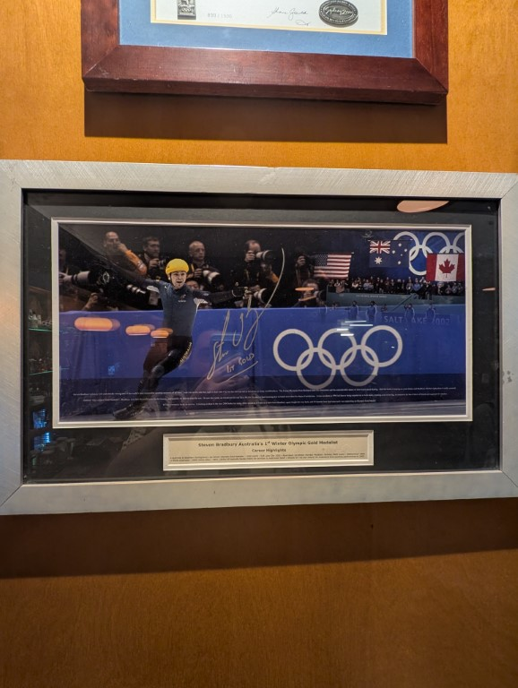
Went to a bar for isabellas birthday and they had a signed bradbery picture, there was a tonne of them on the walls which was a real throwback to my dads work when i was growing up but this one is just nice to see, good on him
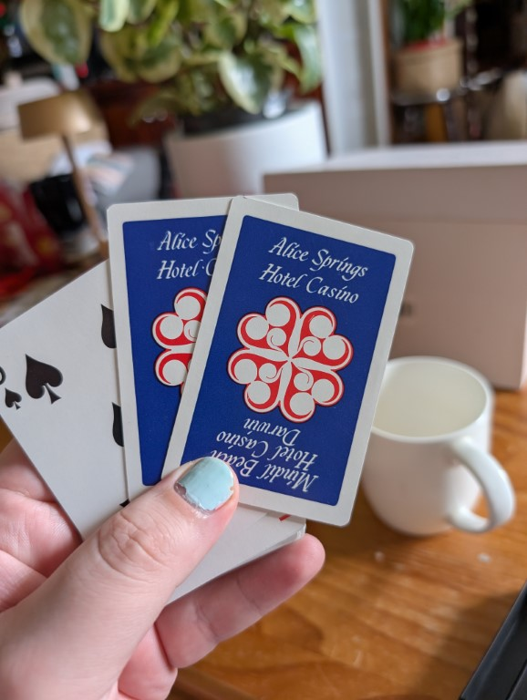
As apart of having to deal with my grandparents stuff my mum now has most of it, and the breadth of different types of cards he had were staggering, like why the fuck does alice springs have an hotel casino? Is it still there? Why am i not in the alice springs casino wearing shorts and a hawaiian shirt drinking thooeys new and loosing the house? Why is that not the dream!
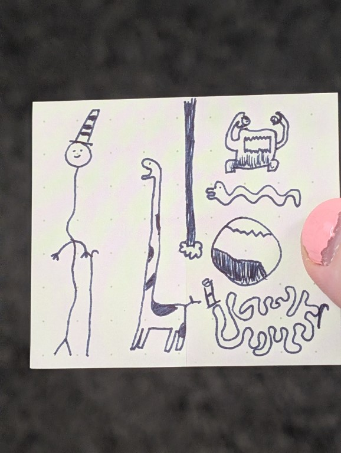
In a continuing trend i get bored during work meetings and doodle, im just proud of myself not drawing any dicks. I don't think any of these things have names but if youve got any ideas hit me up
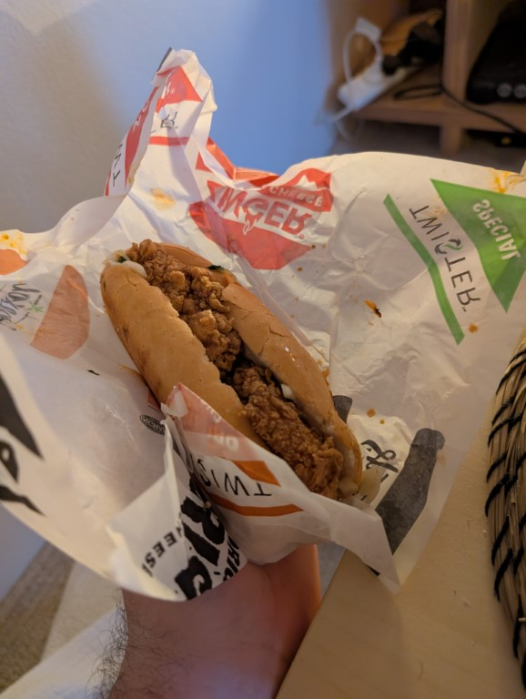
Ok this is the kfc bahn mi. Ordering this was a real low point in my mental health. And it did not help one fucking bit. Its basically an twister but in a baguette. The sauce is so overpowering and bad - the veggies mixed with them stink. I can confidently say that ive bounced back from this low and now know to not order it again.
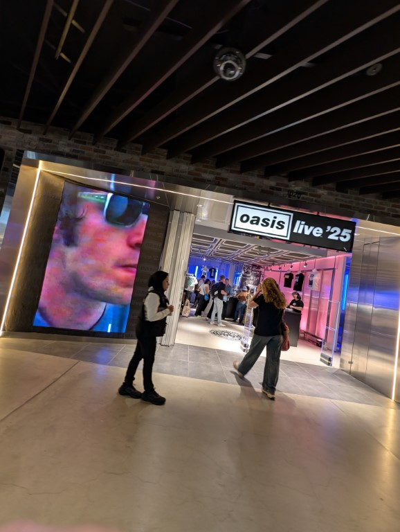
I was in the westfield in the city killing time before a show and saw a huge fucking line for the oasis tour merch store and was like “lmao oasis are in town cool, why do people want merch” (this is what good writers call foreshadowing)
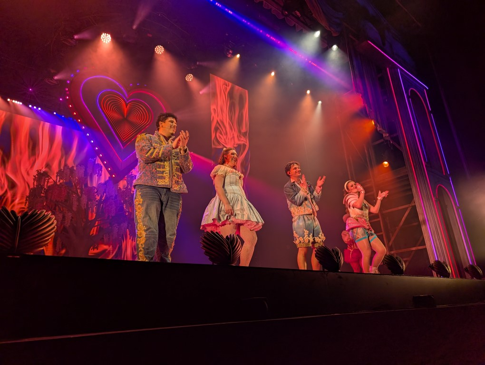
I saw the lovers and ill put thoughts further down but the main thing is, both men started off looking real hot in all black and ruffles. Then they came out in this denim which did no favours for either of them. I also got rush tickets and was sat front row so had a real good look at them and like. God the baggy shorts on the guy int he middle what has fashion come to
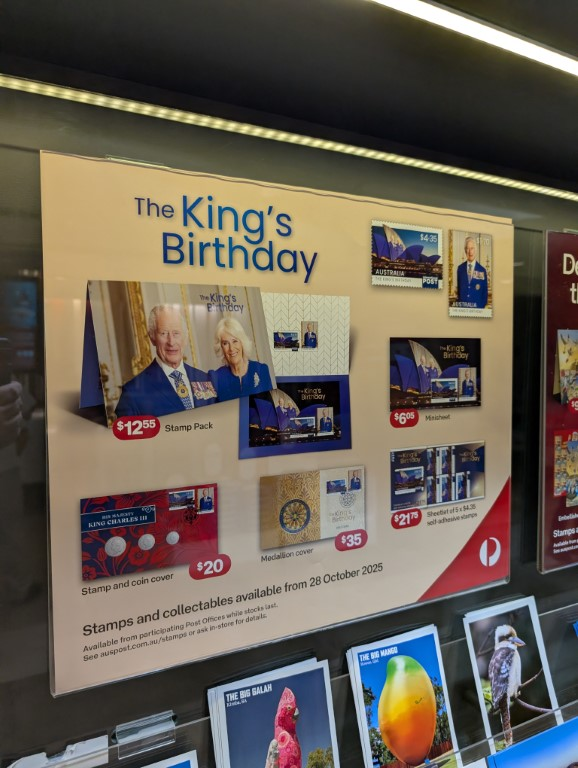
Went to the post office to get my passport renewed and saw this, a fucking nigthmare. Also i couldnt get it renewed this day because my printer cut off the last cm which has an important barcode.
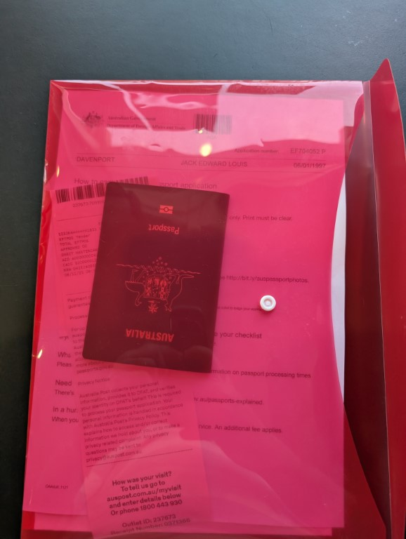
So i went to a different one the next day with the correct thing, and the woman kept being like “oh your middle names are so regal! Like a king!”
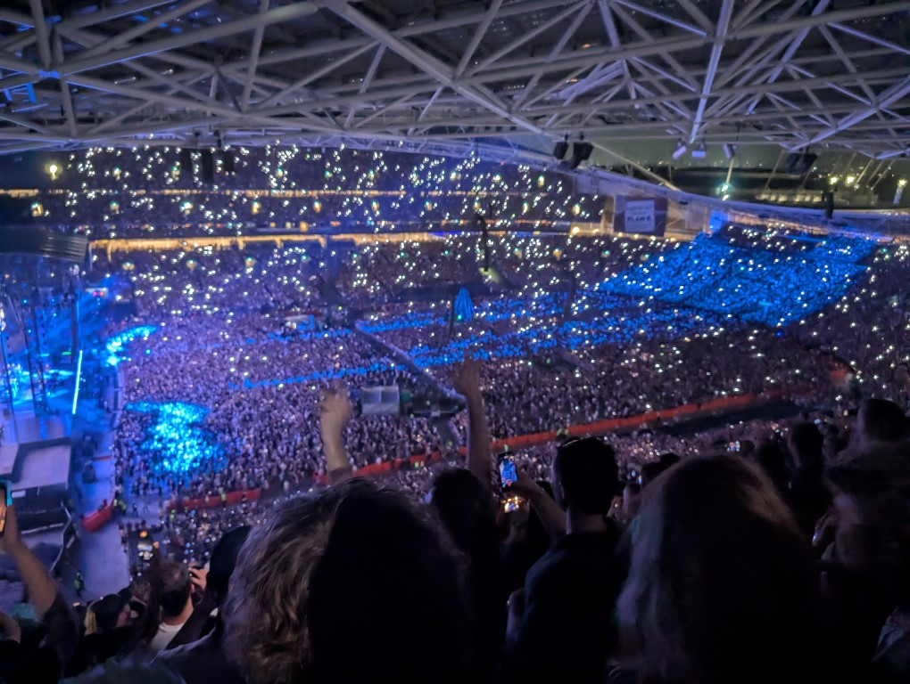
Ok so remember when i was like “whose going to oasis?” well on the friday i found a ticket for 80 bucks and then i was there saturday night, honestly i knew like barley any of the songs but i had a blast! Wonderwall? Oh its beautiful to hear live. As is champaign supanova. At one point the one who wears the hat lit up a ciggie and it was great. What wasnt great was the 3 hours it took for me to get home because fuck sydney olympic park and fuck all the british people i had to endure in the crowd, who were so annoying and also annoyed that the opener act was too aussie and liK EYOU ARE IN SYDNEY FUCK OFF. GO BACK TO THE COLD AND DEPRESSING ENGLAND AND LIVE IN THE MISSERABLE GRAY DON'T COME HERE AND THEN COMPLAIN THAT THINGS AREN'T THE SAME AS THEY ARE BACK HOME YOU MISSERABLE GITS.
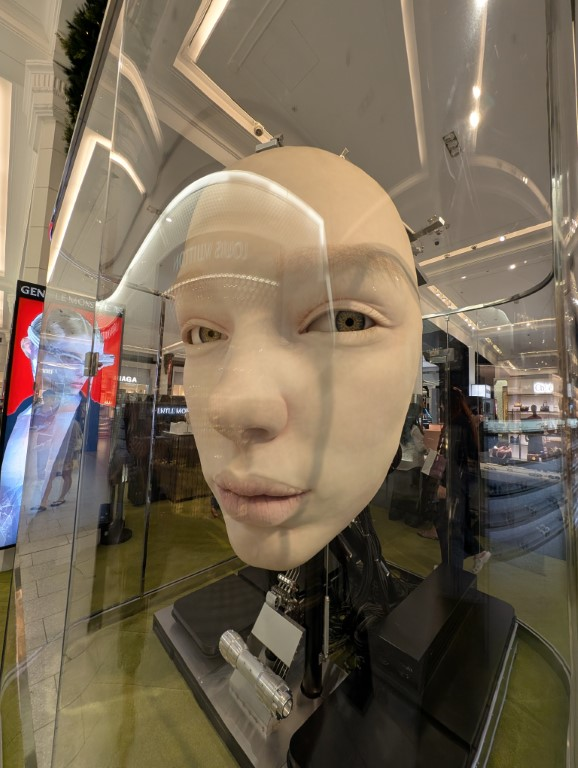
Anyway sorry about that the big face from the airport is now seemingly in david jones in the city which is scary
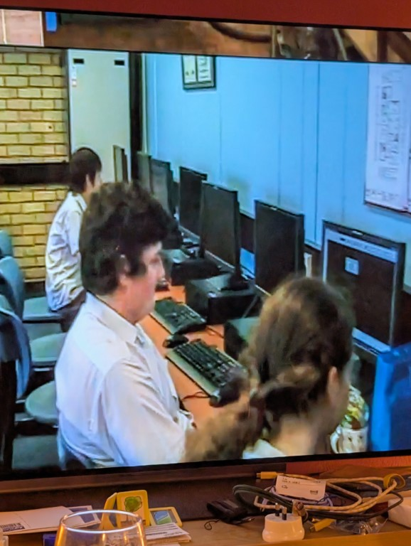
Ok so one night we had wine and was just looking up my highschool and low and behold we found an welcome to the school video for year 7’s which was made for my friend owen’s year. And WHO TURNS UP IN IT BUT ME! (and emily but im the important one) was real spooky to just see me suddenly from like 2011
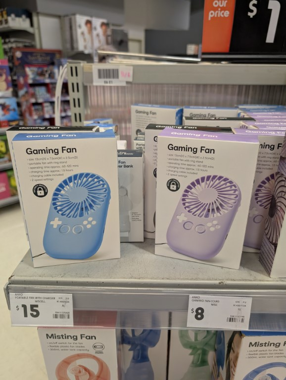
I don't understand the gaming fan
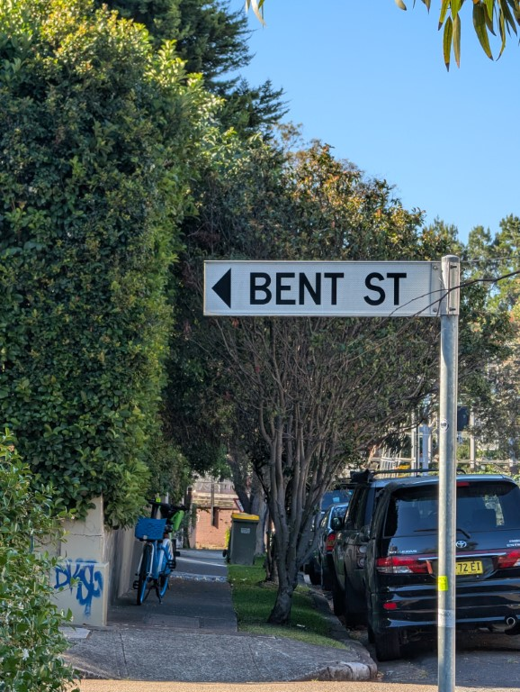
Its important to take pics like this so you can send them in group chats if someones being gay (derogatory)
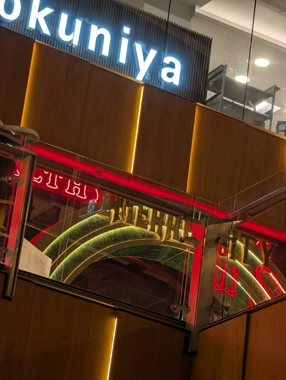
I went late night shopping with my fam and we were in the galleries in the cbd and i was like “why the fuck do i hear the oveture of wicked” and it was fucking grilld just playing it on loop
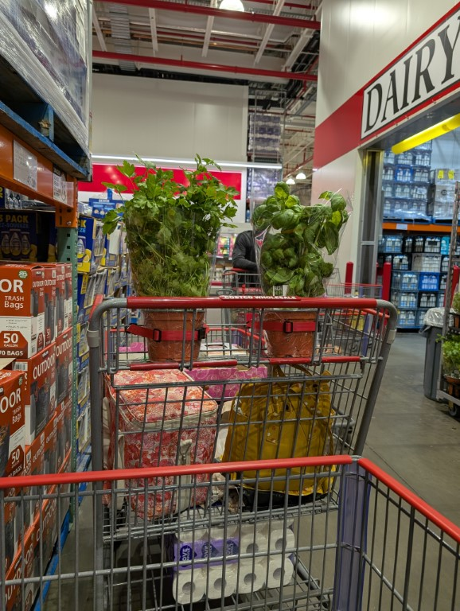
Costco continues to be an living hell, the most fun was trying to lock two plants into the kid thing
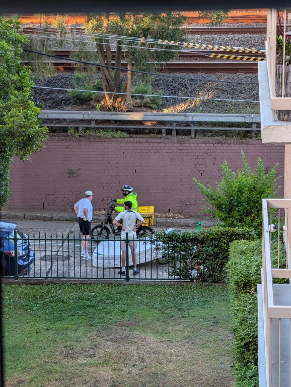
I spent a full 5 minutes watching these idiots try to put a mattress onto a lime bike. Eventually they gave up and just walked away with it but i wouldve loved to have known the logic of “yeah the mattress and both of us can fit on the bike” i shouldve gone down and watch
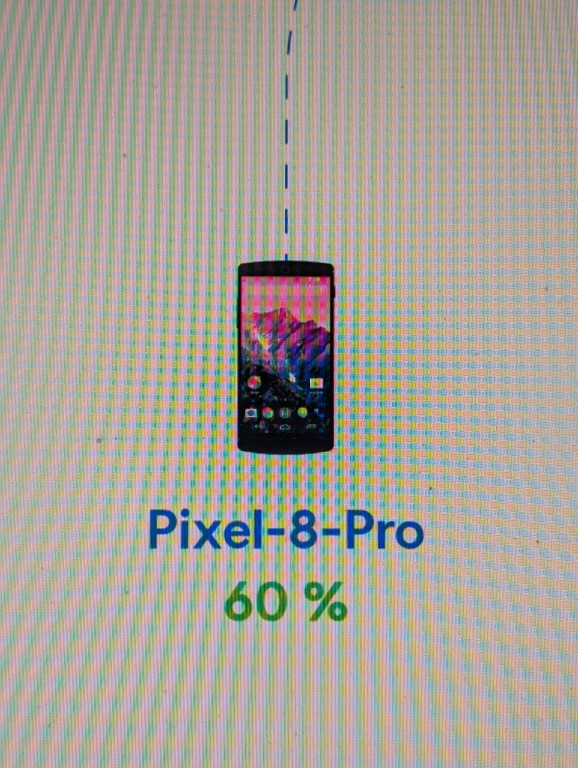
Set up a new router at work and the fucker used a picture of a nexus 5 for my pixel 8 pro??? truly ubiquiti do better! (i do still have a 5, its a good phone - micro usb and outdated but its a nice one)
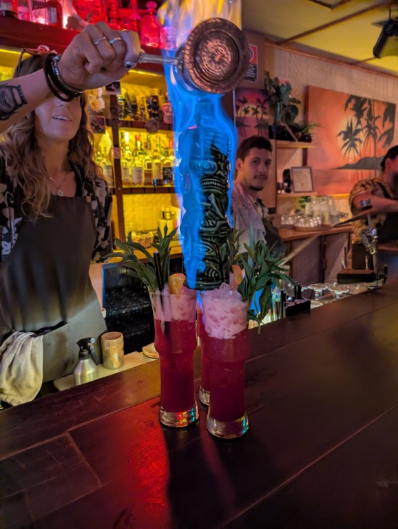
Went out for sarahs birthday drinks last night and ordered the “tiki tiki bang bang” and the bartender looked so happy that she got to make it, and honestly. Im so annoyed because it was so fucking drinkable. It was so sweet and good and it was like $200 but like oh man delish. One day the volcano will be bought also the other bartender staring in the background is hilairous
I was watching a video of someone ranking oreo products and i had the sudden flashback to highshcool, mustve been like year 10? When Emily at lunch had a tub full of the innards of oreos because her sister had made a cheese cake, and it was offered to me. Then she left and i proceeded to eat all of it and she came back surprised and i felt so ill. Now why am i telling this story. Idk i think its funny
Ok so its coming up, i have found an gift im going to give everyone (its the same so yall can stfu) i think i have everyones addresses or i will see you but if i don't and you want it then uh idk lemme know i should probs figure out how to post them sooner rather than later huh
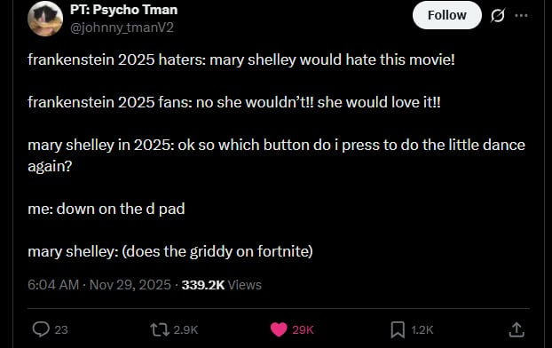
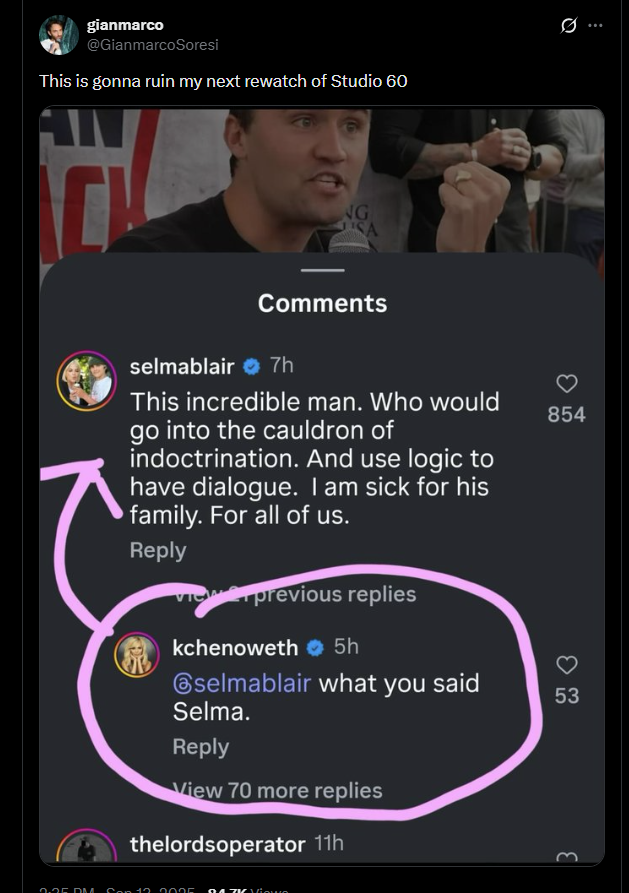
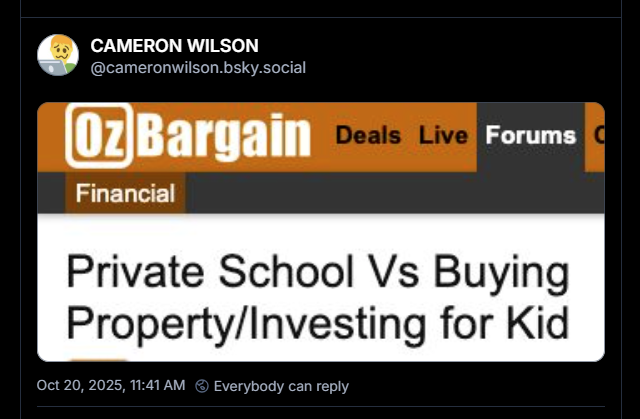
Oh also this one, its a wild throwback to the 2020 sondheim birthday zoom stream where these three sung the ladies who lunch. Theres Christine Baranski wearing headphones in a way i didn't think was possible, Meryl Streep's office has a printer and a seagull, and Audra McDonald just did it seemingly from the floor in her loungeroom.
Anyway this wont be an recurring segment i just thought about a few tweets that made me chuckle
Ok so next up its december! Im hosting an game show at my works christmas party which is mostly done and oh god i havent done the iphone cookie thing yet ok i have to fix that (safari on mobile wont let you store to cookies you have to use local storage) OH ALSO METROID PRIME IS OUT ON THURSDAY im very hype for that, have i finished the first one yet? No! So i guess im diving in and ill just figure it out. Anyway until next time. Keep on gaming gamers